My Favorite Recipes
1. Spaghetti
2. Origin: Italian
3. Source: My Own Recipe
4. Category: Main Dish
5.

6. spaghetti.jpeg
7. Spaghetti is my favorite main dish to make right now. It is so quick, not too many ingredients, and absolutely beginner friendly. Spaghetti is also very easy to customize with your own personal favorite flavors.
8. Recipe Ingredients
- Pasta
- Tomato Sauce
- Ground Beef
- Basil
- Parmesean Cheese
9. Recipe Steps
- Boil 2 cups of water
- Boil pasta for 9 minutes
- Cook the ground beef through
- Add tomato sauce to the ground beef
- Combine sauce and pasta
- Top with basil and parmesean
10. Ingredient photo gallery
11.

12. dry_pasta.jpeg
13.
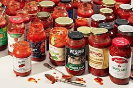14. tomato_sauce.jpeg
15.
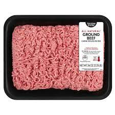16. ground_beef.jpeg
17.
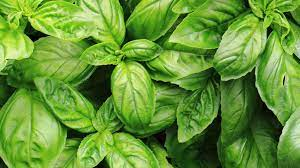18. basil.jpeg
19.
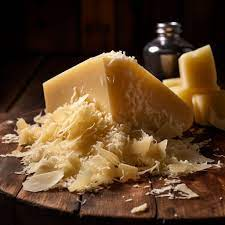20. parmesean.jpeg
21. Lily Steinmetz
1. Stuffed Peppers
2. Origin: Unknown
3. Source: My Own Recipe
4. Category: Main Dish
5.
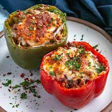6. stuffed_pepper.jpeg
7. Stuffed Peppers are a close second for my favorite main dish to make. They actually have pretty similar ingredients to spaghetti, no wonder I love the taste of both!
8. Recipe Ingredients
- Bell Peppers
- Diced Tomato
- Ground Beef
- Basil
- Mozzerella
9. Recipe Steps
- Cut the tops off of your bell peppers and put them in the oven at 400 F for 20 minutes, or until soft
- Cook the ground beef through
- Add tomatoes to the ground beef
- Scoop the beef and tomato mixture into the soft bell bepper
- Sprinkle mozzerella cheese on top of the peppers
- Top with basil
10. Ingredient photo gallery
11.

12. bell_peppers.jpeg
13.
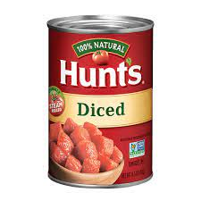14. diced_tomatoes.jpeg
15.
16. ground beef.jpeg
17.
18. basil.jpeg
19.
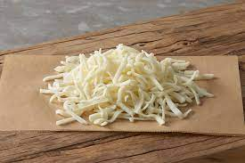20. mozzerella.jpeg
21. Lily Steinmetz
1. Chocolate Almond Butter Bananas
2. Origin: Unknown
3. Source: My Own Recipe
4. Category: Dessert
5.
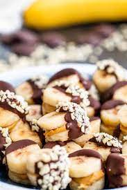6. banana_dessert.jpeg
7. These chocolate almond butter banana slices are absolutely incredible! They are super simple to make and taste delicious. They take a little bit of time to freeze, but the taste is totally worth it.
8. Recipe Ingredients
- Bananas
- Dark Chocolate
- Almond Butter
- Almonds
9. Recipe Steps
- Slice your bananas as thin as desired and pop them in the freezer until frozen.
- After they freeze, take 2 slices and put a little dollop of almond butter in the middle to make a sandwich
- Add the banana and almond butter sandwiches into the freezer
- While those harden, start to melt your dark chocolate
- Dip your banana and almond butter sandwiches into the melted dark chocolate
- Crush your almonds and roll the bananas in the almonds until covered
- Put the bananas back into the freezer and enjoy when they are frozen
10. Ingredient photo gallery
11.
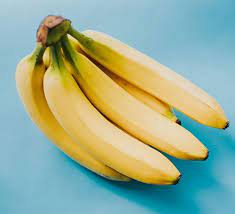12. bananas.jpeg
13.
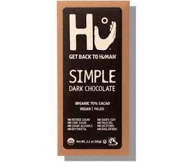14. dark_chocolate.jpeg
15.
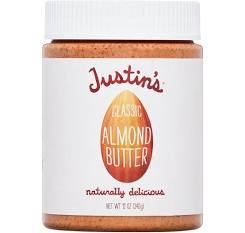16. almond_butter.jpeg
17.
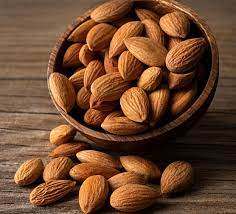18. almonds.jpeg